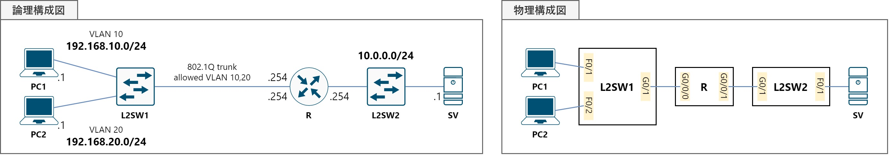

演習06VLAN
構成図
課題
L2SW1にVLANの，RにサブI/Fの設定を行うことで，PC1-2相互の，およびPC1-2⇔SV間の通信を可能にしてください。
なお，問題ファイルでは次の設定項目は完了しています。
- 機器配置
- PC1・2，SVのIPアドレス付与・デフォルトゲートウェイ設定
- Rのホスト名設定・IPアドレス付与（G0/0/1のみ）
- L2SW1のホスト名設定
- 機器間のケーブル接続
手順
⑴ L2SW1でVLAN10・VLAN20を作成する。
⑵ L2SW1のF0/1・F0/2をアクセスポートとし，それぞれVLAN10・VLAN20をアサインする。
⑶ L2SW1のG0/1をトランクポートとし，VLAN10・VLAN20の通過を許可する。
⑷ L2SW1にVLANが作成されたことと，I/Fに適切なVLANがアサインされたことを確認する。
⑸ RのG0/0/0を有効化した上で，サブI/Fを作成し，IPアドレスの付与とVLANタグの設定を行う。
⑹ PC1-2相互の，およびPC1-2⇔SV間のpingに成功することを確認する。
使用するコマンド
vlan ＜VLAN番号＞switchport mode accessswitchport access vlan ＜VLAN番号＞switchport mode trunkswitchport trunk allowed vlan ＜VLAN番号＞interface ＜I/F番号＞.＜論理番号＞encapsulation [isl | dot1q] ＜VLAN番号＞
解説
VLANは，“virtual LAN”というその名の通り，レイヤ2の機器において仮想的なLANを作る技術です。スイッチを内部で論理的に分割し，VLAN10という「子スイッチ」とVLAN20という「子スイッチ」を作り出している，と考えると分かりやすいと思います。
⑴ L2SW1でVLAN10・VLAN20を作成する。
まず初めに，VLAN10・VLAN20という論理的な「子スイッチ」を作ります。
L2SW1# configure terminal
L2SW1(config)# vlan 10
L2SW1(config-vlan)# vlan 20
L2SW1(config-vlan)# exit
L2SW1(config)#
⑵ L2SW1のF0/1・F0/2をアクセスポートとし，それぞれVLAN10・VLAN20をアサインする。
アクセスポートとは，一つのVLANのみに所属するスイッチポートのことです。あるVLANにアサインされたアクセスポートから，別のVLANに所属されたアクセスポートへ通信することはできません。「VLANをアクセスポートにアサインする」というのは，スイッチポートをそのVLANに所属させることを意味します。
先程の「子スイッチ」のイメージで図に示すと，以下のようになります。

次のコマンドを入力し，F0/1をVLAN10の，F0/2をVLAN20のアクセスポートに設定しましょう。
L2SW1(config)# interface f0/1
L2SW1(config-if)# switchport mode access
L2SW1(config-if)# switchport access vlan 10
L2SW1(config-if)# interface f0/2
L2SW1(config-if)# switchport mode access
L2SW1(config-if)# switchport access vlan 20
L2SW1(config-if)#
なおアクセスポートは，VLANと物理ポートが1:1で結びついているため，ポートVLANとも呼ばれます。
⑶ L2SW1のG0/1をトランクポートとし，VLAN10・VLAN20の通過を許可する。
トランクポートとは，2つ以上のVLANに所属するスイッチポートのことです。複数のVLANの通信を通過することができるので， トランクポートから出力する際，イーサネットフレームにタグを付与することで，どのVLANの通信かを区別しています。

トランクポートは，上位のスイッチやルータへのアップリンクとなるポートに設定することが多いです。ここでは，Rに接続するF0/24をトランクポートとし，VLAN10・VLAN20のフレームを通過できるように設定しましょう。
L2SW1(config-if)# interface g0/1
L2SW1(config-if)# switchport mode trunk
L2SW1(config-if)# switchport trunk allowed vlan 10,20
L2SW1(config-if)# end
L2SW1#
なおトランクポートでは，イーサネットフレームにタグを付与するこの動きから，タグVLANとも呼ばれます。
⑷ L2SW1にVLANが作成されたことと，I/Fに適切なVLANがアサインされたことを確認する。
show vlan briefコマンドを使うと，作成したVLANと，そのVLANをアサインしているアクセスポートの一覧を確認することができます。
なお，トランクポートは特定のVLANに所属しているわけではないので，この画面上には表示されません。確認する場合は，show interface ＜I/F番号＞ trunkコマンドを使用します。

⑸ RのG0/0/0を有効化した上で，サブI/Fを作成し，IPアドレスの付与とVLANタグの設定を行う。
今度は，ルータ側の設定です。VLAN10とVLAN20ではネットワークが異なるため，当然ながらデフォルトゲートウェイも別のアドレスである必要があります。しかし，L2SW1に接続されたRのポートは，G0/0/0しかありません。
そこで，G0/0/0という物理I/FをサブI/Fという仮想のI/Fへ論理的に分割し，そこにIPアドレスを付与することで，それぞれのVLANにとってのデフォルトゲートウェイとして機能させます。
ここで注意すべきなのは，対向のスイッチとカプセル化方式・VLAN
IDが一致していなければならないということです。カプセル化方式というのは，VLANタグを付与して通信を識別するプロトコルのことで，ISL・IEEE 802.1Qがこれに該当します。
サブI/Fを作成するには，まずは物理I/Fを有効化します。その上で，例えば物理I/FがG0/0/0ならば「G0/0/0.1」のように，末尾に論理番号を付加します。パラメータを参照しながらIPアドレスを付与し，今回はIEEE 802.1Qを用いる設定を行います。
R# configure terminal
R(config)# interface G0/0/0
R(config-if)# no shutdown
R(config-if)# interface G0/0/0.1
R(config-subif)# encapsulation dot1q 10
R(config-subif)# ip address 192.168.10.254 255.255.255.0
R(config-subif)# interface G0/0/0.2
R(config-subif)# encapsulation dot1q 20
R(config-subif)# ip address 192.168.20.254 255.255.255.0
R(config-subif)# end
R#